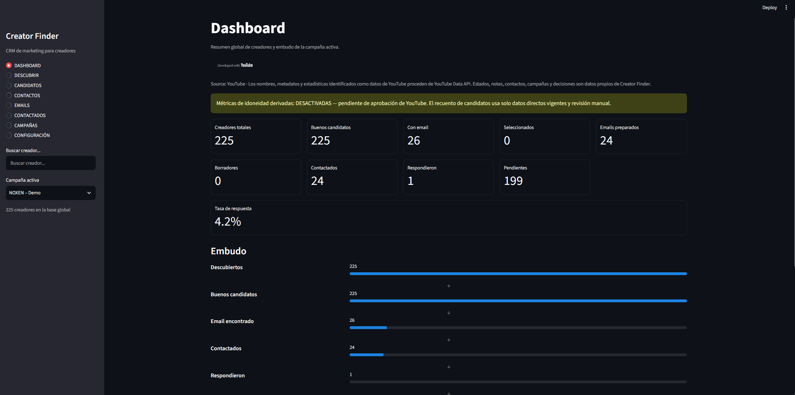
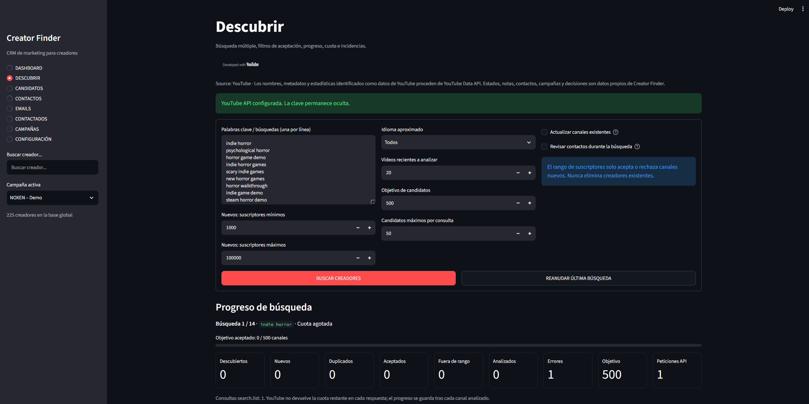
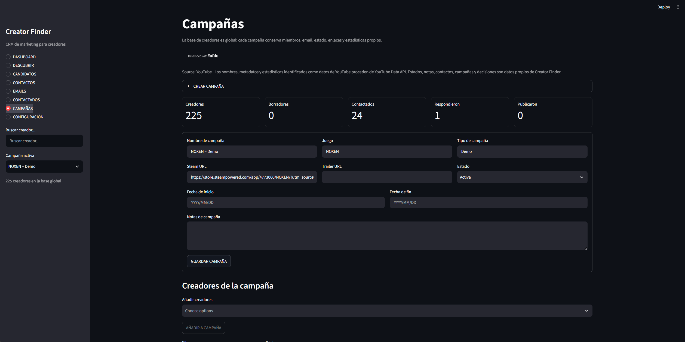
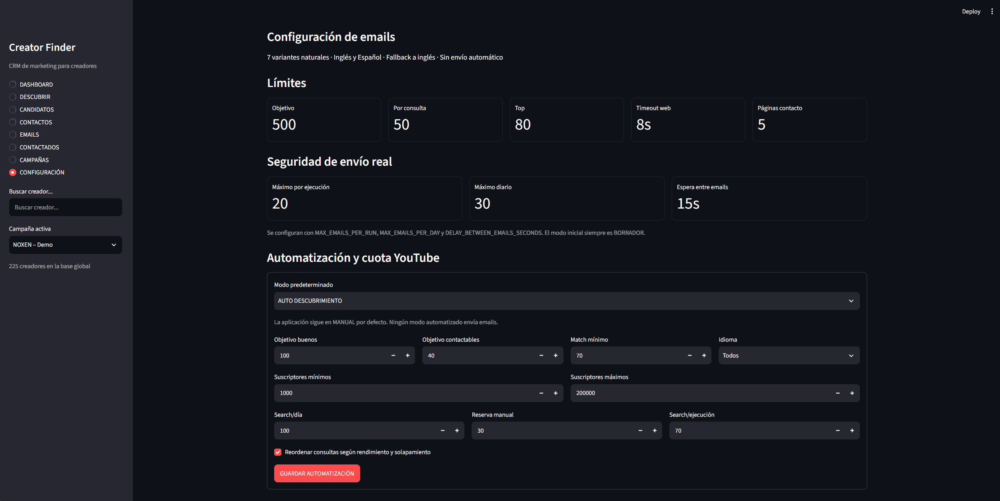

Descubrimiento
Localiza canales y vídeos públicos relacionados con temas de campaña.
Herramienta privada · Uso interno
Herramienta interna para descubrimiento y gestión de outreach de creadores. Organiza datos públicos directos de canales y vídeos para revisión manual en campañas de videojuegos de XOTOX STUDIO.
Creator Finder es actualmente una herramienta privada de uso interno y no está disponible para acceso público.

Creator Finder utiliza los servicios de YouTube Data API.
Creator Finder no está afiliado, respaldado ni patrocinado por YouTube o Google.
Creator Finder reúne un flujo de trabajo local para explorar creadores, reducir trabajo repetido y preparar contactos de forma controlada.
Localiza canales y vídeos públicos relacionados con temas de campaña.
Aplica filtros directos configurados por el usuario y mantiene la decisión final bajo revisión humana.
Evita procesar repetidamente los mismos candidatos o contactos.
Reutiliza información y aplica presupuestos para reducir consultas redundantes.
Agrupa búsquedas, candidatos, decisiones y estados por lanzamiento.
Registra vías de contacto profesionales publicadas de forma pública.
Prepara comunicaciones que requieren aprobación explícita antes de enviarse.
Gestiona estados y, con permiso, consulta respuestas relacionadas en Gmail.
Un proceso secuencial, asistido por datos públicos y con revisión humana antes de cualquier comunicación.
Creator Finder utiliza YouTube Data API v3 para consultar información pública necesaria para descubrir y revisar manualmente canales y vídeos relacionados con campañas de videojuegos. Los datos se refrescan o invalidan/eliminan como máximo a los 30 días; las métricas avanzadas derivadas permanecen desactivadas mientras esperan la aprobación aplicable.
Creator Finder no vende datos obtenidos mediante YouTube API.
No proporciona a terceros acceso a YouTube API Data ni a sus credenciales.
No intenta evitar ni eludir las cuotas establecidas por YouTube API.
Creator Finder no es un producto oficial de YouTube ni de Google.
Capturas completas y sin editar de la compilación local preparada para auditoría, revisadas el 11 de agosto de 2026.

dashboard.png
discovery.png
campaigns.png
quota.pngConsulta el propósito, el acceso, el uso de cuota y el flujo de campaña del cliente API.